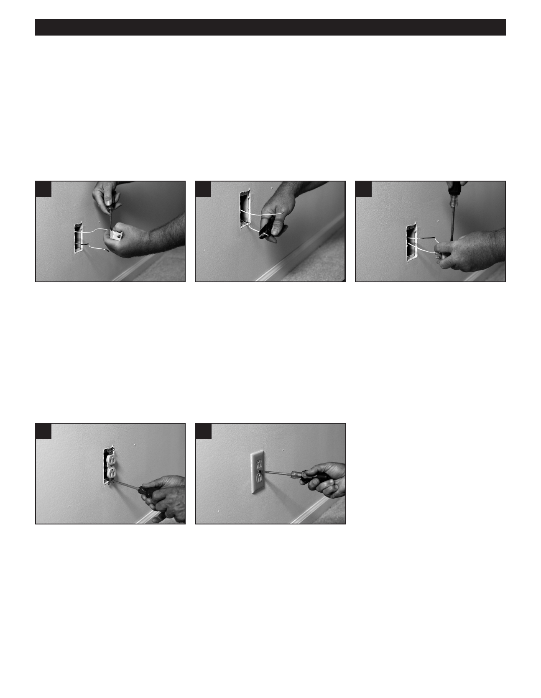

PA RT I C I PA N T R E S O U R C E G U I D E
Replacing a Receptacle (continued)
How-to Steps
1. Turn off the power to the circuit. Then follow the steps to Lockout/Tagout the circuit.
2. Remove the screws and receptacle cover.
3. Unscrew the receptacle from the electrical box and—without touching any wires—gently pull it out.
4. Use a multimeter or circuit tester to verify that the power has been turned off. (See page 20.)
5
6
7
5. Hold a new and identical receptacle 6. Unscrew the terminals and carefully
7. Connect the wires to a new
near the old one to see how the
pull away the wires. Make sure
receptacle that has the same
wires should be installed on the
the wire ends are clean and free
ratings. Attach each wire to the new
replacement. Some use terminal
from insulation. If needed, use a
receptacle in the same way it was
screws on the side while others have
wire stripper or combination tool to
attached to the old receptacle. The
slots on the back for inserting bare
remove insulation from the last 1/4-
white wire typically is connected to
wires. Many have both.
inch of the wire.
a silver terminal and the black or red
Tip: Label each wire for its location
to a brass terminal. Use electrical
on the receptacle screw terminals,
tape as needed to cover all terminals
using masking tape and a pen.
and bare wires.
8
9
8. Gently push the receptacle into
9. Replace the cover plate, restore
the electrical box. Tighten the
power to the circuit, and test the
mounting screws and check that
receptacle to make sure it works.
the receptacle is straight.
52